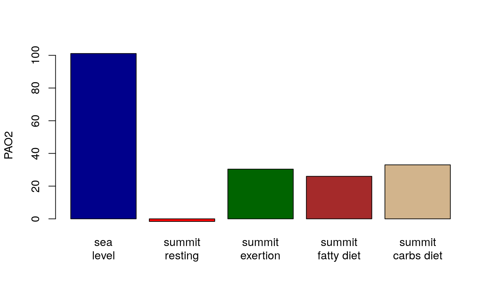

vignettes/Everest.Rmd
Everest.RmdThe summit of Mount Everest is at 8850 meters above sea level. It is unclear how humans can survive at all at this altitude without supplemental oxygen (West 2012): this article shows how it is possible.
We can calculate the atmospheric pressure, compared to that at sea level:
## [1] 0.3108019We asssume the same fraction of oxygen in atmosphere at sea level and Everest summit. The relative fraction of gasses changes significantly much higher in the atmosphere.
We have to fix a common assumption in examples of the alveolar gas equation that the partial pressure of water vapor in the alveolus is ~47mmHg. This is true at sea level barometric pressures, but not on Everest, and the term becomes significant in the extremes of an Everest ascent. It is probably more complicated than this, but let’s start by just scaling the sea level partial pressure of water vapor.
temp_k = temp_c_to_k(37)
svp <- svp_sea_level(temp_k)
PAH2O_mmHg_summit <- svp * pres_atm_frac(8850)The calculated saturation vapor pressure (SVP) of 46.936853 matches the common textbook value of 47 at sea level barometric pressure.
pres_atm_everest = 760 * pres_atm_frac(8850)
PAO2_sealevel <- alveolar_PAO2_mmHg(
PACO2_mmHg = 40,
Patm_mmHg = 760)
PAO2_summit_resting <- alveolar_PAO2_mmHg(
PACO2_mmHg = 40,
Patm_mmHg = pres_atm_everest,
PAH2O_mmHg = PAH2O_mmHg_summit)The assumption of a typical PACO2 of 40 mmHg is invalid for a climber who has achieved the summit. In fact, the hyperventilation due to hypoxemia results in a significantly lower PACO2. Let’s take the group mean of 13.3 mmHg (an astonishingly low number) from the Caudwell Xtreme Everest expedition climbers (Grocott et al. 2009).
Above we assumed the respiratory quotient (RQ) is the typical 0.8. Would a higher fat or higher carbohydrate diet make it easier to be at the summit of Everest without supplemental oxygen?
rq_lipids <- 0.6
rq_carbs <- 1.0
PAO2_summit_lipids <- alveolar_PAO2_mmHg(
PACO2_mmHg = PACO2_mmHg_Grocott,
Patm_mmHg = pres_atm_everest,
PAH2O_mmHg = PAH2O_mmHg_summit,
rq = rq_lipids)
PAO2_summit_carbs <- alveolar_PAO2_mmHg(
PACO2_mmHg = PACO2_mmHg_Grocott,
Patm_mmHg = pres_atm_everest,
PAH2O_mmHg = PAH2O_mmHg_summit,
rq = rq_carbs)In pratice, there is a limit to how much RQ can be modified, especially in light of an Everest summit attempt (base camp six to summit and back) taking something of the order of 10,000 kcal, which is not matched by caloric intake. Thus, the summit attempt, and likely preceeding stages, are catabolic: burning body fat or ingested fat requires more oxygen per unit energy than burning simple carbohydrates.

The remarkable thing about this plot is that dropping a resting adult out of a pressurized container (e.g., an aeroplane) on to the summit of Mount Everest would be quickly fatal, since there is no room for oxygen in the alveoli. Of course, some molecules of oxygen would reach the alveoli, but the water would be furiously boiling off and occupying alveolar space; and without extreme hyperventilation, the blood would also be exporting a large amount carbon dioxide.
Further refinements could be made to this simple model, for example, accounting fo the fact that there is slightly higher atmospheric pressure measured than predicted at the Everest summit (West et al. 1983; West 2012).
Grocott, Michael P. W., Daniel S. Martin, Denny Z. H. Levett, Roger McMorrow, Jeremy Windsor, Hugh E. Montgomery, and Caudwell Xtreme Everest Research Group. 2009. “Arterial Blood Gases and Oxygen Content in Climbers on Mount Everest.” The New England Journal of Medicine 360 (2): 140–49. https://doi.org/10.1056/NEJMoa0801581.
West, J. B., S. Lahiri, K. H. Maret, R. M. Peters, and C. J. Pizzo. 1983. “Barometric Pressures at Extreme Altitudes on Mt. Everest: Physiological Significance.” Journal of Applied Physiology: Respiratory, Environmental and Exercise Physiology 54 (5): 1188–94. https://doi.org/10.1152/jappl.1983.54.5.1188.
West, John B. 2012. “High-Altitude Medicine.” American Journal of Respiratory and Critical Care Medicine 186 (12): 1229–37. https://doi.org/10.1164/rccm.201207-1323CI.